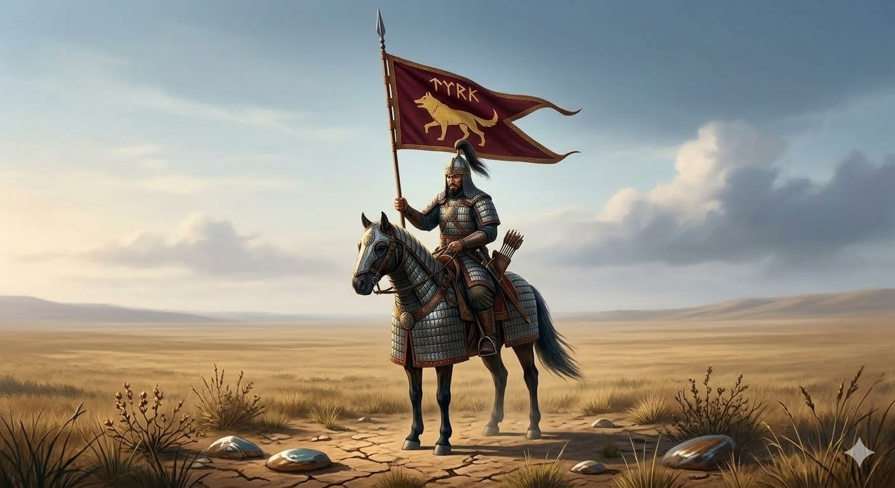
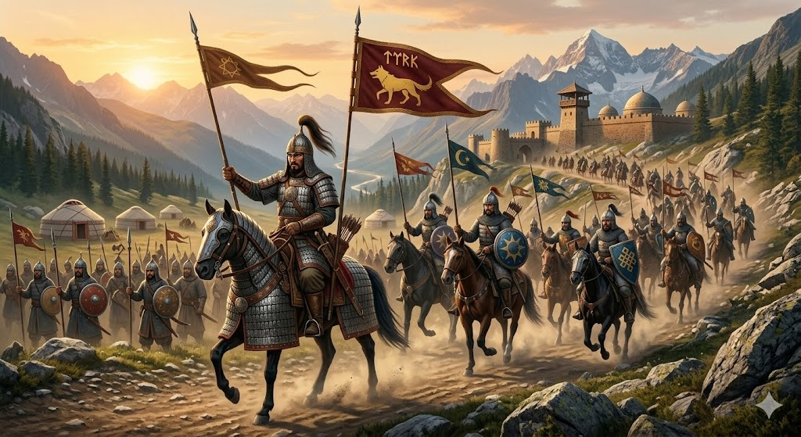
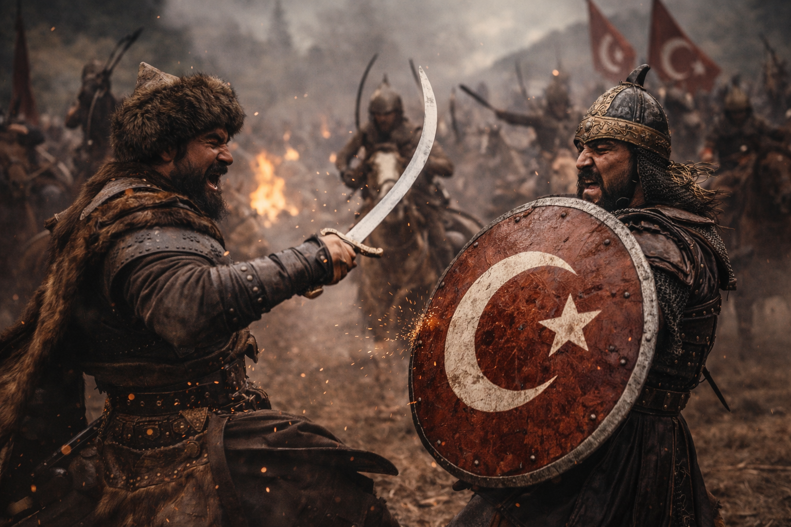
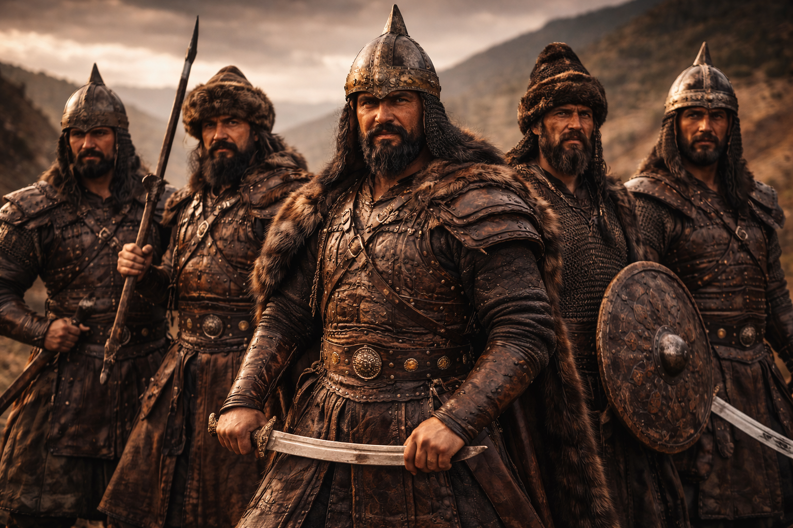
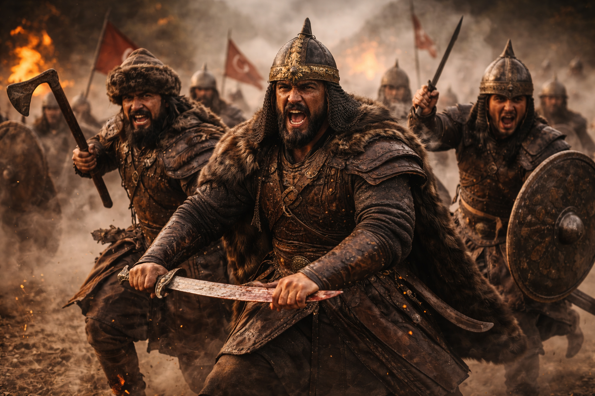
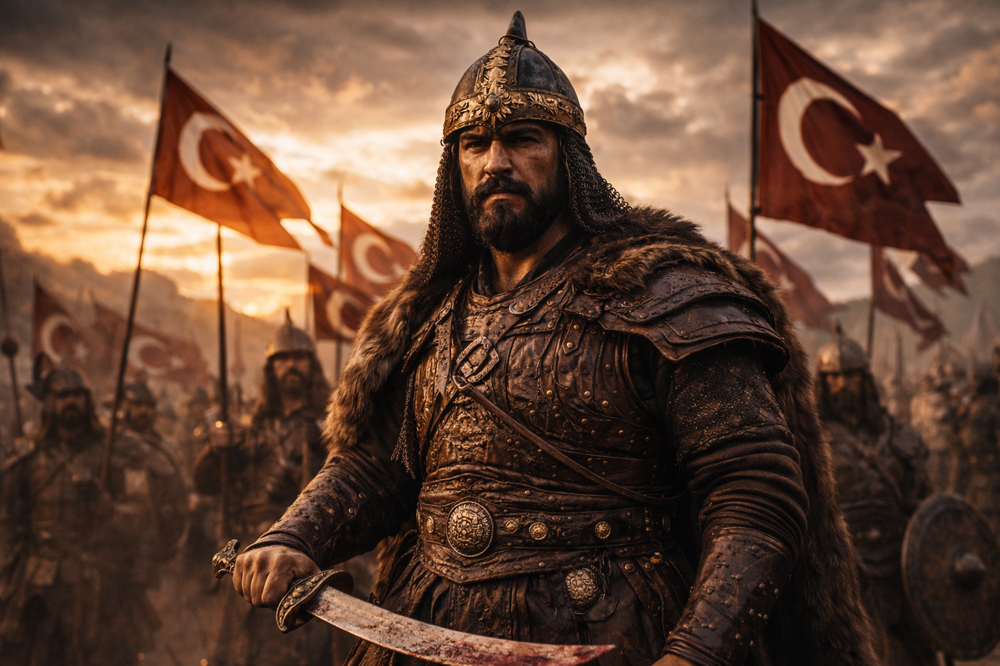

Turk jangchisi
Turk tarixida ko‘plab mashhur qahramonlar bo‘lgan. Masalan, Alp Er Tunga qadimgi turk rivoyatlarida eng buyuk jangchilardan biri sifatida tilga olinadi. Yana O‘g‘uzxon turk xalqlarining ajdodi va buyuk sarkarda sifatida mashhur.

Otliq alp
Ot turk madaniyatida juda muhim bo‘lgan. Otliq askarlar tez harakat qilgani uchun dushman ustidan ustunlikka ega bo‘lgan. Ular uzoq masofalarni tez bosib o‘tib, kutilmagan hujumlar uyushtirgan.

Jang sahnasi
Turk qo‘shinlari jangda tezkor hujum taktikasidan foydalangan. Ular dushmanni o‘rab olish, soxta chekinish va uzoq masofadan kamon bilan zarba berish kabi usullarni ishlatgan. Bu usullar ko‘plab janglarda g‘alaba keltirgan.

Turk askarlari
Qadimgi turk askarlari juda intizomli va jangovar bo‘lgan. Ular ko‘pincha ot ustida jang qilgan va kamon, qilich, nayza kabi qurollardan foydalangan. Turk qo‘shinlarining asosiy kuchi tezkor otliq askarlar edi.

Qadimgi jangchilar
Qadimgi turk jangchilari jasorat, sadoqat va kuch timsoli hisoblangan. Ular yoshligidan ot minish, kamondan o‘q otish va jang san’atini o‘rgangan. Bu jangchilar ko‘pincha “alp” yoki “bahodir” deb atalgan.

Turk qahramoni
“Alp” so‘zi qadimgi turk tilida jasur, qahramon jangchi degan ma’noni anglatadi. Masalan, Alp Arslon ham tarixda buyuk sarkarda sifatida tanilgan va turk alp an’analarini davom ettirgan.
Batafsil tugmachasini bosish orqali Turk Alplari haqida koproq malumotlar olsaningiz boladi.
Batafsil